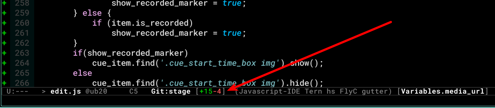

Emacs modeline enhancement for Git diff
Abstract
Emacs has a built-in function vc-mode to work with version control systems such as CVS, Subversion, Git and so on. It enables to show diff / commit logs and commit codes without working with the dedicated commands on terminal applications. For Git, we can operate general git commands such as status / log / diff / checkout / commit / push. The screenshot below is a sample of vc-diff command to show git diff.
In this post, a utility function to enhance vc-diff command for Git is introduced with changing the behavior of the internal function of vc-git.el and improve the modeline for efficient coding.

Show the numbers of diff lines on modeline
When we open a file on Emacs tracked by Git, the branch name is shown on the modeline. This build-in feature is enabled by a lisp function vc-git-mode-line-string below defined in vc-git.el. We will extend the build-in behavior with defadvice to show the numbers of diff lines on modeline.
+---[/usr/share/emacs/26.3/lisp/vc/vc-git.el.gz:339]
| (defun vc-git-mode-line-string (file)
| "Return a string for `vc-mode-line' to put in the mode line for FILE."
| (let* ((rev (vc-working-revision file 'Git))
| (disp-rev (or (vc-git--symbolic-ref file)
| (substring rev 0 7)))
| (def-ml (vc-default-mode-line-string 'Git file))
| (help-echo (get-text-property 0 'help-echo def-ml))
| (face (get-text-property 0 'face def-ml)))
| (propertize (concat (substring def-ml 0 4) disp-rev)
| 'face face
| 'help-echo (concat help-echo "\nCurrent revision: " rev))))
+---
To show the information of git diff, we can get each number of added/deleted lines with using git diff –numstat – FILE_NAME. An sample output with the command is below and the 1st column is the numbers of lines added to files and the 2nd one is the ones of deleted lines. If we execute with specifying a filename, we can get only for the file.
$ git diff --numstat --
7 6 .bashrc
2 1 .bashrc-common
34 9 .emacs
1 0 .folders
4 4 .ssh/config-home
5 1 emacslib/.aspell.en.pws
4 3 emacslib/meeting-dev.template
2 2 emacslib/my-edit.el
108 11 emacslib/my-org.el
4 60 emacslib/my-wl.el
101 55 emacslib/wl-common.el
The lisp function below is the final output of the utility function. The number of added lines is shown with green3 and the one of deleted lines is shown with a color predefined by font-lock-warning-face. If there is no diff on the opened file, "✔" is shown.
(defadvice vc-git-mode-line-string (after plus-minus (file) compile activate)
"Show the information of git diff on modeline."
(setq ad-return-value
(concat (propertize ad-return-value 'face '(:foreground "white" :weight bold))
" ["
(let ((plus-minus (vc-git--run-command-string
file "diff" "--numstat" "--")))
(if (and plus-minus
(string-match "^\\([0-9]+\\)\t\\([0-9]+\\)\t" plus-minus))
(concat
(propertize (format "+%s" (match-string 1 plus-minus)) 'face '(:foreground "green3"))
(propertize (format "-%s" (match-string 2 plus-minus)) 'face '(:inherit font-lock-warning-face)))
(propertize "✔" 'face '(:foreground "green3" :weight bold))))
"]")))
As a screenshot below, the diff information is shown on modeline with the branch name.
